- ホーム
- インプラント治療｜治療の流れ・費用
Implant Flowインプラント治療の流れ
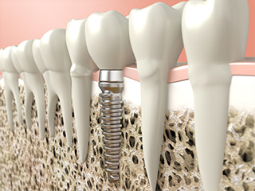
渋谷駅すぐの歯医者「渋谷ルーブル歯科・矯正歯科」では、失った歯の機能回復のためのインプラント治療に力を入れています。インプラント治療は比較的新しく開発された治療法ですので、名前は聞いたことがあっても、治療についての詳しいことはよく知られていないかもしれません。治療をスムーズに進めるためには、患者様ご自身もどのような治療なのかをしっかり理解することが大切です。こちらでは治療の流れと治療費用をご案内します。
渋谷ルーブル歯科・矯正歯科のインプラント治療の流れ
STEP1 無料カウンセリング予約
インプラント治療をお考えの方はお気軽にご相談ください。まずは、無料カウンセリングにご予約ください。不安や質問にお答えします。24時間いつでも送信できるメールフォーム、または診療時間内のお電話（03-6455-2383）にてご予約いただけます。

STEP2 ご来院

ようこそ、渋谷ルーブル歯科・矯正歯科へ。ご来院いただけましたら、まず受付にどうぞ。そして問診票にご記入ください。健康保険証のご提示もお願いします。
STEP3 初診・カウンセリング（無料）
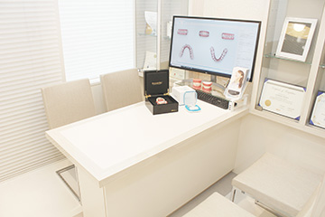
問診票などをもとに、患者様のお口のお悩みやご要望などを詳しくお伺いします。治療についての不安や疑問もお聞かせいただければ、丁寧にわかりやすくご説明します。所要時間は30分ほどです。
STEP4 検査
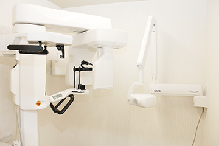
口腔内の状態を把握するために虫歯や歯周病の有無や噛み合わせなどの検査をおこないます。またレントゲン撮影やCT撮影、診断用模型の作製もおこないます。
STEP5 診断・検査結果のご説明
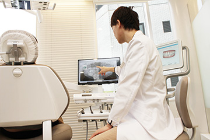
検査結果のデータをもとに、患者様のご要望もふまえて治療方針をご提案します。インプラント治療にもいくつかの種類がありますので、その選択肢やそれぞれの治療法の特徴、メリット・デメリット、治療の流れや期間、費用などについても詳しくご説明します。ご不明点がありましたら遠慮なくおたずねください。
STEP6 治療へのご同意
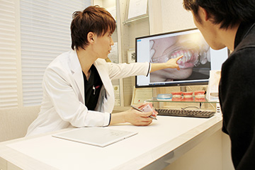
治療プランをご理解、ご納得いただけましたら、ご同意をいただき、治療開始です。ご同意なしには治療には進みませんのでご安心ください。
STEP7 インプラント治療スタート
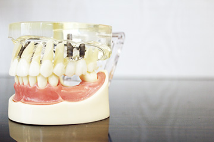
治療プランに沿ってインプラント治療を開始します。診断用模型から仮歯を作製し、装着していただきます。これは上部構造の調整をおこなうためです。
STEP8 インプラント治療の前のさまざまな治療
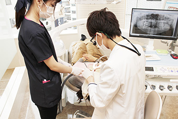
虫歯や歯周病があるときにはそちらの治療を優先します。また顎の骨が足りない場合には、治療プランに沿って骨造成処置をおこないます。
STEP9 シミュレーション
精密検査で得たデータをもとにコンピュータ上でシミュレーションいたします。そしてどの位置、どの深さにインプラントを埋入するかを計画するのです。
STEP10 インプラント埋入手術（1回目）
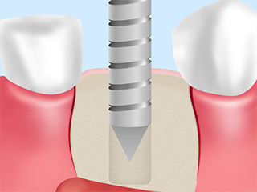
局所麻酔をしてから、シミュレーションに沿ってインプラント埋入手術をおこないます。抜歯即時埋入をおこなう場合には手術はこの1回です。
STEP11 抜歯・治癒期間
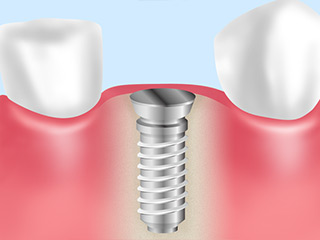
チタン製のインプラント体が顎の骨にしっかり結合するまで治癒期間（安静期間）を設けます。治癒期間は、治療部位や患者様のお口の状態によっても異なりますが、だいたい2～4ヶ月ほどです。
STEP12 手術（2回目）・アバットメント装着
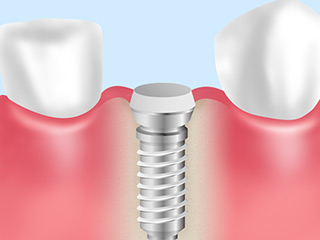
治癒期間が過ぎてインプラントが安定しましたら歯肉を切開し、アバットメントとよばれるインプラントと被せ物の連結部を装着します。そして歯ぐきが治癒するまで、さらに1～6週間の治癒期間を設けます。
STEP13 上部構造の作製と装着
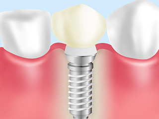
インプラントの上部構造を作製し、装着します。噛み合わせのチェックが終わりましたらしインプラント治療完了です。
STEP14 メンテナンス・定期検診
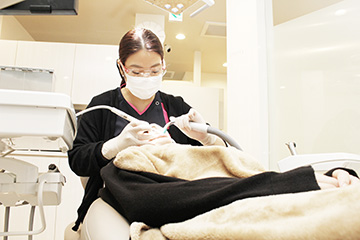
インプラント治療が終了しましたら、毎日のセルフケアを続けてください。インプラントは虫歯や歯周病にはかかりませんが、ケアを怠ると、歯周病に似た症状「インプラント周囲炎」などのトラブルを引き起こすことがあります。
定期的に歯科医院でのメンテナンスにご来院ください。噛み合わせのチェックや虫歯、歯周病の検査、歯のクリーニングなどをおこないます。インプラント治療には10年保証がつきます。これは3ヶ月に1回の定期検診にご来院の方にかぎりますので、長くお口の健康を保つためにもメンテナンスを続けましょう。
IMPLANT PRICEインプラント治療費用
渋谷駅すぐの歯医者「渋谷ルーブル歯科・矯正歯科」では、しっかり噛めて、見た目も自然に美しく仕上げられるインプラント治療に力を入れています。こちらはインプラント治療にかかる費用です。実際の費用の合計は、患者様のご要望やお口の状態により異なりますのでご相談ください。すべて税抜き価格で表示しています。
※表示価格は税別
| インプラント体（ファクスチャー） | 200,000円 | |
|---|---|---|
| ジルコニアクラウン | +150,000円 | |
| GBR | +50,000～150,000円 | |
| 即時埋入 | +50,000円 | |
| ソケットリフト | +50,000円 | |
| サイナスリフト | +150,000円 | |
| スプリット | +50,000円 | |
| 前歯 | +50,000円 | |
| ガイド | +50,000円 | |
インプラント10年保証
当院ではインプラント治療を受けられた患者様に、10年保証を設定しております。治療を終了してから10年間、3ヶ月ごとのメンテナンスにご来院の患者様は、インプラント体のトラブルが発生した場合、保証させていただきます。上部構造は保証対象外です。ただし、定期的に検診を受けている方に限ります。
詳しくはスタッフにお問い合わせください。